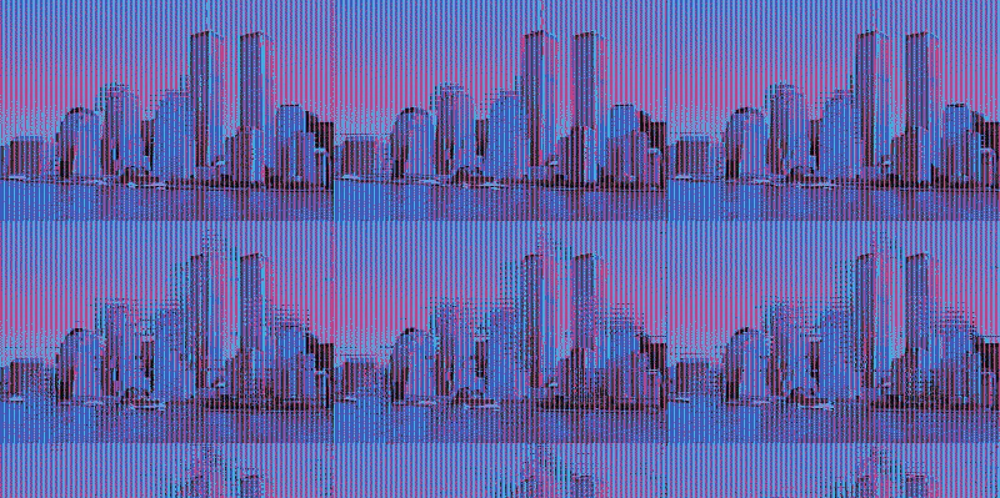
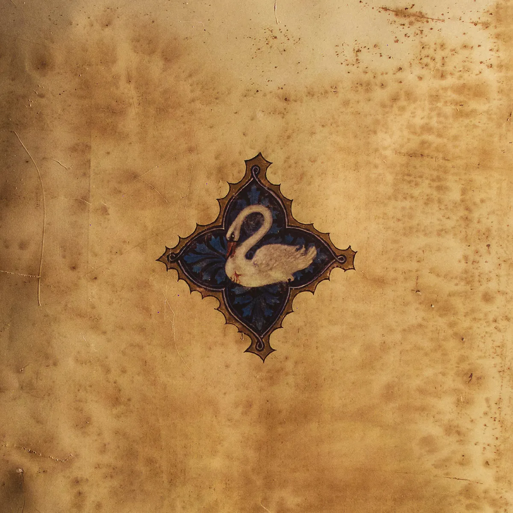
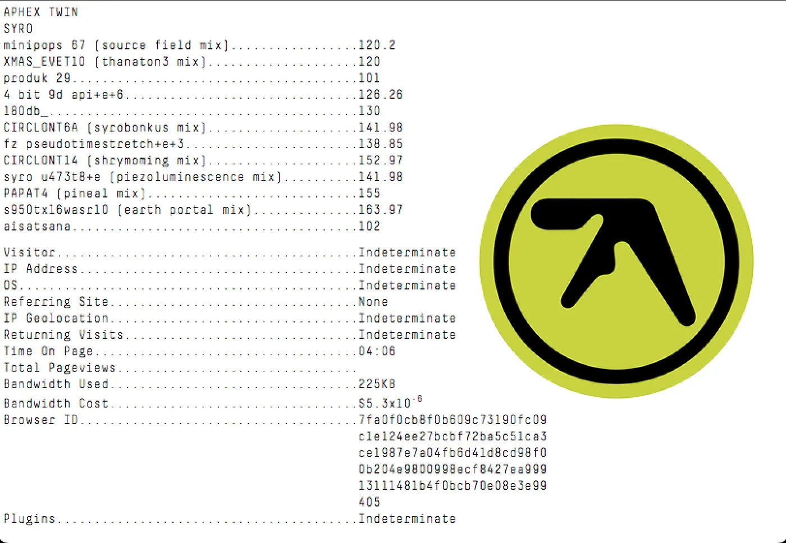
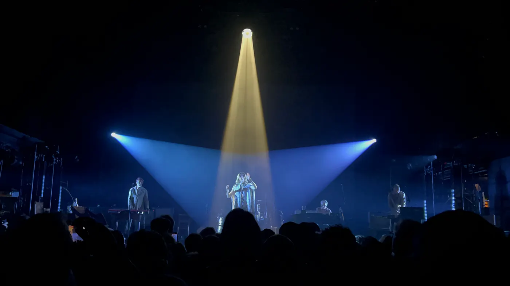
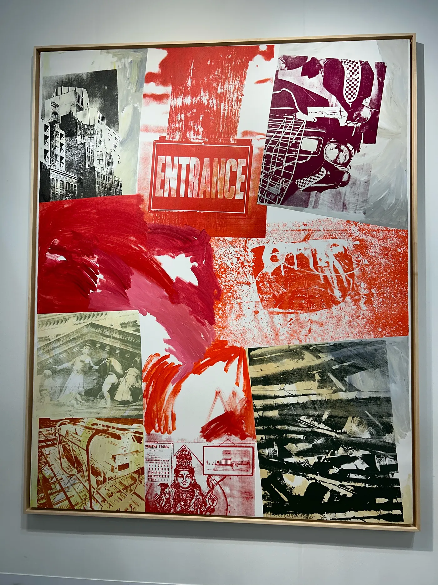

My Writing portfolio. Currently, this portfolio only showcases my non-ficiton articles. Expect fiction works soon.
No AI was ever used in the process of writing any of these articles, and it never will be.

2025
Why are we nostalgic for eras we were never apart of?

2024
A quick look at the avant-garde composer's “newest” release.

2024
10 years before it was a 'brat summer', a different green album was making the rounds.

2024
A new fan's experience at PJ Harvey's First American Tour in 7 years.

2024
From classics to contemporaries: here's some of the artworks that caught my eye.